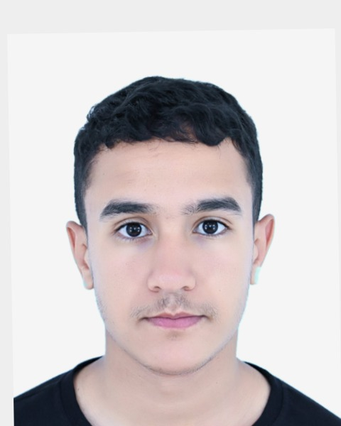
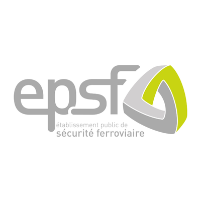
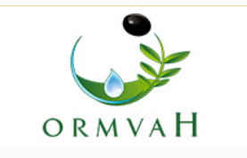
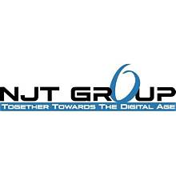

Développement Logiciel
Applications fullstack de bout en bout, API REST, Clean Architecture & DevOps.
Étudiant Master MIAGE · |
Profil hybride à la croisée du développement logiciel, de la Data / Business Intelligence et de la gestion de projet. Je conçois des applications de bout en bout, j'industrialise des tableaux de bord décisionnels et je pilote des projets SI en méthode Agile — avec la donnée et la qualité au cœur de la valeur.

Power BI .NET / Vue IA & AgileApplications fullstack de bout en bout, API REST, Clean Architecture & DevOps.
Tableaux de bord décisionnels, mesures DAX, reporting industrialisé & IA.
Pilotage Agile/Scrum, suivi QCD, animation des parties prenantes & reporting.
Je suis Oualid Hmoudou, étudiant en Master MIAGE (Méthodes Informatiques Appliquées à la Gestion des Entreprises) à l'Université de Picardie Jules Verne, à Amiens.
Mon parcours conjugue une solide base d'ingénierie logicielle (Java, C#/.NET, PHP, Vue/React, API REST, DevOps) et une expertise croissante en Data / Business Intelligence (Power BI, DAX, SQL, Python). Le MIAGE est précisément le pont entre l'informatique et le pilotage des systèmes d'information — c'est cette polyvalence que je mets au service d'équipes exigeantes.
Mon engagement à la Croix-Rouge Française comme équipier secouriste m'a forgé à la rigueur opérationnelle, à la gestion du stress et au sens du collectif. Curieux, autonome et organisé.



Application fullstack menée en équipe Agile/Scrum : modélisation BDD, API REST documentée (Swagger), intégration front/back, pipeline CI/CD GitHub Actions.
Digitalisation d'un processus métier (soutenances) via Power Automate, SharePoint et Teams. Tableaux de bord Power BI avec modélisation et mesures DAX.
Agent à apprentissage par renforcement (Q-learning). Modélisation de l'environnement, logique d'entraînement en Python et évaluation des performances.
Backend REST en Clean Architecture multi-tiers ; gestion des entités métier, relations entre données et interfaces dynamiques. Accent sur la cohérence des données.
Architecture backend SOLID avec catégorisation arborescente (Composite, Decorator), CRUD complet et API modulaire. 8 design patterns implémentés.
Architecture Java avec multithreading et design patterns (Observer, State, Singleton) pour la gestion simultanée de requêtes et la synchronisation temps réel.
Coordination d'une équipe de développement : planification des sprints, gestion des livraisons, documentation technique et formation des utilisateurs finaux.
À la recherche active d'une alternance (dès septembre 2026) en développement logiciel, Data/BI ou gestion de projet SI. N'hésitez pas à me contacter — je réponds rapidement.